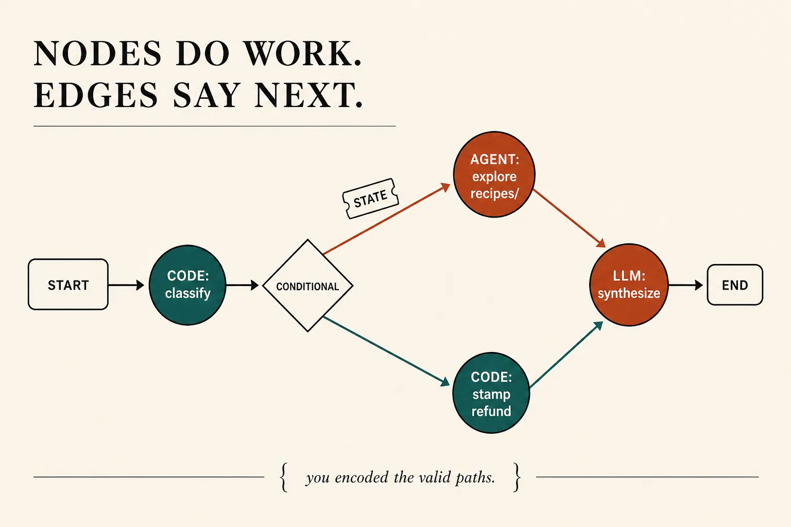
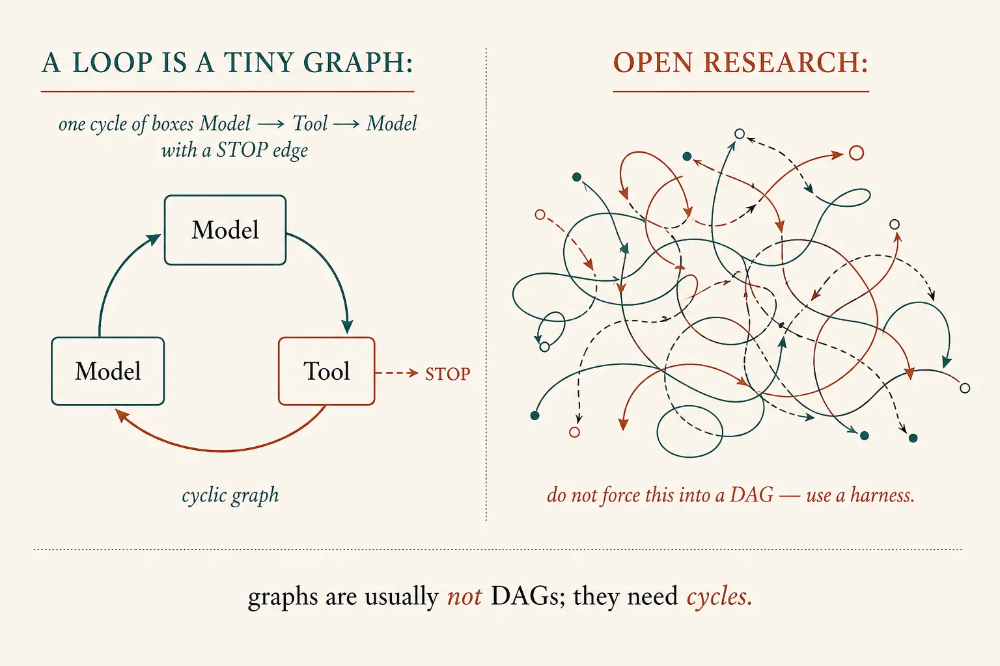
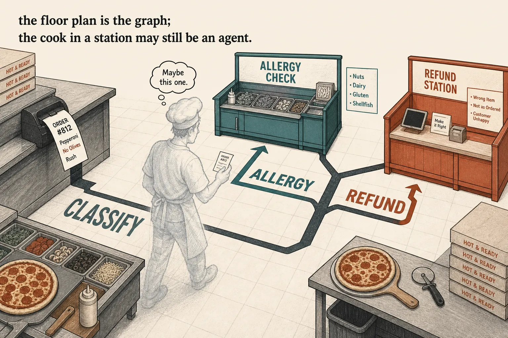

Graph engineering
You draw the edges
Lesson 0006 asked who owns control flow: your path, or a loop. Graph engineering is the mix. You write the valid paths as nodes and edges so the model cannot skip classify-before-till — and a node may still be a whole agent when the work inside is open.
What this is. Encoding your knowledge of how the system should work: nodes do work, edges say what happens next, state is the ticket that moves. LangGraph’s claim: mix deterministic steps with agentic ones in one graph. 3 Years of Graph Engineering with LangGraph
What this is not. A new model. “Always use LangGraph.” A DAG religion (production graphs need cycles). Evals, checkpointing, or the whole runtime catalogue — parked. Not a ChatGPT menu item named “Graph.”
- 1 · NodeDoes work. Code, one LLM call, or a full agent (0011).
- 2 · EdgeWhat happens next. Fixed, or conditional on state.
- 3 · StateThe ticket moving through. A graph is a state machine.
You already chose workflow vs agent. Tonight you may put both on one floor plan.

Architecture first. You imposed the paths. The model reasons only where you left a hole.
A loop is already a tiny graph
Khourshid via LangChain: a loop is a directed cyclic graph. LangChain’s simple agent loop is built on LangGraph. Loop engineering (0012) is not the opposite of graphs — it is the one-cycle case: act → verify → stop? → kick. Graph engineering is when you need more than that cycle: classify always before refund; inspect always before patch. Same essay · “loops are simple graphs”

Agent graphs are usually not DAGs: retry, ask a human, tool until enough. Cycles are the point.
One kitchen · three node kinds
# OPEN LOOP — model picks; may refund first
while not done:
action = llm(messages, tools)
# GRAPH — you drew the edges
classify = code(ticket) # deterministic node
if classify == "allergy":
refund = code + harness stamp # still 0007 on the till
elif classify == "recipe":
sop = Agent(explore, brief) # agent node (0011)
answer = llm("synthesize", sop) # one call, no tools
# NOT A GRAPH
"Who else does walnut crumb?" → harness loop
# you cannot name the search path in advance
What this shows. Same tools as 0005. Architecture = which transitions are legal. Runkle & Chase’s docs agent: Slack/Linear are code nodes, classify/synthesize are single calls, codebase work is an agent node. That mix is cheaper and more predictable than hoping one loop does all three.

Kitchen only to make the floor plan concrete. The load-bearing picture is the state machine.
When not to draw edges
Open-ended research: plan, delegate, search, read, synthesize in orders you cannot pin. LangGraph’s team built early deep research as a workflow, then moved to an agent harness (Deep Agents) so planning and context stay in the loop. Forcing fake stages is how you get a graph that lies. Same essay · “When not to use graphs”
Skill: name the shape
Hope is an open loop that refunds first. Edges force classify. Mix puts a helper inside a node. Research should stay a harness.
Same kitchen, four shapes
Layers, not religions
Loop (0006 / 0012)
The model picks the next tool, or you design the heartbeat. Right when the path cannot be named.
Graph (tonight)
You name the legal paths and leave holes. Right when classify-then-act must always hold.
Harness (0007)
The box around whatever you drew: allow, run, stop, show. LangGraph is a runtime; Deep Agents is a harness on top.
Parked: durable execution, checkpoints, Send / map-reduce, LangSmith. A node that is “a whole coding agent” is newly practical — that is the 2026 twist, not the invention of graphs. Plugins still wait. Next: whether the shape moved a number you care about.
Check
Primary source. 3 Years of Graph Engineering with LangGraph (nodes/edges/state; loop is a cyclic graph; when not to graph). Runtime one-liner: LangGraph overview (mix deterministic and agentic steps). Layers: Deep Agents vs LangChain vs LangGraph.
Card: graph engineering. Last split: workflow vs agent. Last heartbeat: loop engineering.